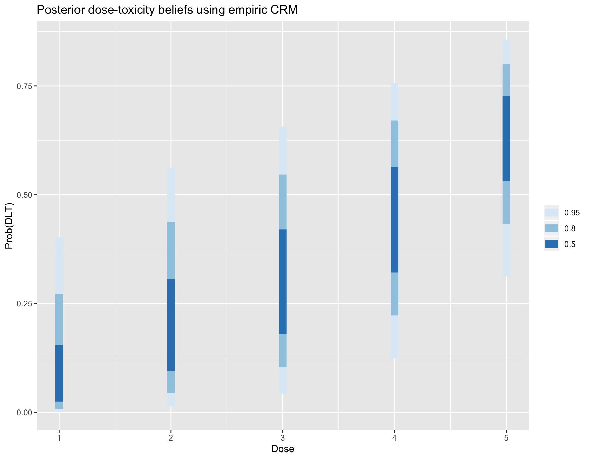
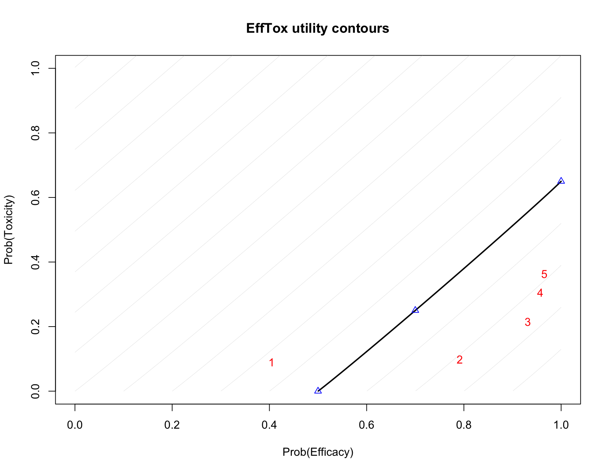

trialr is a collection of Bayesian clinical trial designs implemented in Stan and R.
Many notable Bayesian designs for clinical trials have been published. However, one of the factors that has constrained their adoption is availability of software. We present here some of the most popular, implemented and demonstrated in a consistent style, leveraging the powerful Stan environment.
It should be stressed that Bayesian trialists are not generally without code. Often authors make available code with their design publication. There are also some fantastic packages that aid the use of certain designs. However, challenges to use still persist. The disparate methods are naturally presented in a style that appeals to the particular author. Features implemented in one package for one design may be missing in another. Sometimes the technology chosen may only be available on one particular operating system, or the chosen technology may have fallen into disuse.
trialr seeks to address these problems. Models are specified in Stan, a state-of-the-art environment for Bayesian analysis. It uses Hamiltonian Monte Carlo to take samples from the posterior distributions. This method is more efficient than Gibbs sampling, for instance, and reliable inference can be performed on a few thousand posterior samples. R, Stan and trialr are each available on Mac, Linux, and Windows, so all of the examples presented here should work on each operating system. Furthermore, Stan offers a very simple method to split the sampling across n cores, taking full advantage of the modern multicore processor in your computer (probably).
The designs implemented in trialr are introduced briefly below, and developed more fully in vignettes. We focus on real-life usage, including:
ggplot graphics.In all examples, we will need to load trialr
The Continual Reassessment Method (CRM) was first published by @OQuigley1990. It assumes a smooth mathematical form for the dose-toxicity curve to conduct a dose-finding trial seeking a maximum tolerable dose. There are many variations to suit different clinical scenarios and the design has enjoyed relatively common use (although nowhere near as common as the ubiquitous and inferior 3+3 design).
We will demonstrate the method using a notional trial example. In a scenario of five potential doses, let us assume that we seek the dose with probability of toxicity closest to 25% where our prior guesses of the rates of toxicity can be represented:
Let us assume that we have already treated 2 patients each at doses 2, 3 and 4, having only seen toxicity at dose-level 4. What dose should we give to the next patient or cohort? We can fit the data to the popular empiric model
mod1 <- stan_crm(outcome_str = '2NN 3NN 4TT', skeleton = skeleton,
target = target, model = 'empiric', beta_sd = sqrt(1.34),
seed = 123)The fitted model contains lots of useful of information:
mod1
#> Patient Dose Toxicity
#> 1 1 2 0
#> 2 2 2 0
#> 3 3 3 0
#> 4 4 3 0
#> 5 5 4 1
#> 6 6 4 1
#>
#> DoseLevel Skeleton N Tox ProbTox ProbMTD
#> 1 1 0.05 0 0 0.1081169 0.21400
#> 2 2 0.15 2 0 0.2159618 0.27175
#> 3 3 0.25 2 0 0.3098591 0.26575
#> 4 4 0.40 2 2 0.4444842 0.20900
#> 5 5 0.60 0 0 0.6235105 0.03950
#>
#> The model targets a toxicity level of 0.25.
#> The dose with estimated toxicity probability closest to target is 2.
#> The dose most likely to be the MTD is 2.library(ggplot2)
plot_df = data.frame(DoseLevel = 1:length(skeleton),
ProbTox = mod1$prob_tox)
ggplot(plot_df, aes(x = DoseLevel, y = ProbTox)) +
geom_point() + geom_line() + ylim(0, 1) +
geom_hline(yintercept = target, col = 'orange', linetype = 'dashed') +
labs(title = 'Posterior dose-toxicity curve under empiric CRM model')
Several variants of the CRM are implemented in ‘trialr’. Further visualisation techniques are demonstrated in the Visualisation in CRM vignette.
EffTox by @Thall2004 is a dose-finding design that uses binary efficacy and toxicity outcomes to select a dose with a high utility score. We present it briefly here but there is a much more thorough examination in the EffTox vignette.
For demonstration, We fit the model parameterisation introduced by @Thall2014 to the following notional outcomes:
| Patient | Dose-level | Toxicity | Efficacy |
|---|---|---|---|
| 1 | 1 | 0 | 0 |
| 2 | 1 | 0 | 0 |
| 3 | 1 | 0 | 1 |
| 4 | 2 | 0 | 1 |
| 5 | 2 | 0 | 1 |
| 6 | 2 | 1 | 1 |
outcomes <- '1NNE 2EEB'
mod <- stan_efftox_demo(outcomes, seed = 123)
#> trying deprecated constructor; please alert package maintainermod
#> Patient Dose Toxicity Efficacy
#> 1 1 1 0 0
#> 2 2 1 0 0
#> 3 3 1 0 1
#> 4 4 2 0 1
#> 5 5 2 0 1
#> 6 6 2 1 1
#>
#> DoseLevel ProbEff ProbTox ProbAccEff ProbAccTox Utility
#> 1 1 0.4045039 0.08990953 0.33175 0.92700 -0.3397885
#> 2 2 0.7917219 0.09875146 0.94575 0.92250 0.4237935
#> 3 3 0.9313427 0.21522248 0.98475 0.72900 0.5249445
#> 4 4 0.9572788 0.30606939 0.98475 0.62925 0.4380717
#> 5 5 0.9657038 0.36255571 0.98350 0.57725 0.3685257
#> Acceptable
#> 1 TRUE
#> 2 TRUE
#> 3 TRUE
#> 4 FALSE
#> 5 FALSE
#>
#> The model recommends selecting dose-level 3.In this instance, after evaluation of our six patients, the dose advocated for the next group is dose-level 3. This is contained in the fitted object:
This is not surprising because dose 3 has the highest utility score:
Sometimes, doses other than the maximal-utility dose will be recommended because of the dose-admissibility rules. See the papers for details.
Functions are provided to create useful plots. For instance, it is illuminating to plot the posterior means of the probabilities of efficacy and toxicity at each of the doses on the trade-off contours. The five doses are shown in red. Doses closer to the lower-right corner have higher utility.
efftox_contour_plot(mod$dat, prob_eff = mod$prob_eff, prob_tox = mod$prob_tox)
title('EffTox utility contours')
This example continues in the EffTox vignette.
There are many publications related to EffTox but the two most important are @Thall2004 and @Thall2014.
@Thall2008 introduced an extension of EffTox that allows dose-finding by efficacy and toxicity outcomes and adjusts for covariate information. Brock, et al. simplified the method by removing the dose-finding components to leave a design that studies associated co-primary and toxicity outcomes in an arbitrary number of cohorts determined by the basline covariates. They refered to the simplifed design as BEBOP, for Bayesian Evaluation of Bivariate binary Outcomes with Predictive variables.
The investigators implement the design is a phase II trial of pembrolizumab in non-small-cell lung cancer. A distinct feature of the trial is the availability of predictive baseline covariates, the most notwworthy of which is the PD-L1 tumour proportion score, shown by @Garon2015 to be a predictive biomarker.
This example is demonstrated in the BEBOP vignette.
You can install trialr from github with:
If the latest CRAN build is what you seek then instead run:
It should go without saying that the CRAN release will be older than the github version.
If there is a published Bayesian design you want implemented in Stan, get in touch. Contact @brockk on github.
Garon, Edward B, Naiyer a Rizvi, Rina Hui, Natasha Leighl, Ani S Balmanoukian, Joseph Paul Eder, Amita Patnaik, et al. 2015. “Pembrolizumab for the treatment of non-small-cell lung cancer.” The New England Journal of Medicine 372 (21): 2018–28. doi:10.1056/NEJMoa1501824.
O’Quigley, J, M Pepe, and L Fisher. 1990. “Continual reassessment method: a practical design for phase 1 clinical trials in cancer.” Biometrics 46 (1): 33–48. doi:10.2307/2531628.
Thall, Peter F., Hoang Q. Nguyen, and Elihu H. Estey. 2008. “Patient-specific dose finding based on bivariate outcomes and covariates.” Biometrics 64 (4): 1126–36. doi:10.1111/j.1541-0420.2008.01009.x.
Thall, Peter F., J. Kyle Wathen, B. Nebiyou Bekele, Richard E. Champlin, Laurence H. Baker, and Robert S. Benjamin. 2003. “Hierarchical Bayesian approaches to phase II trials in diseases with multiple subtypes.” Statistics in Medicine 22 (5): 763–80. doi:10.1002/sim.1399.
Thall, PF, and JD Cook. 2004. “Dose-Finding Based on Efficacy-Toxicity Trade-Offs.” Biometrics 60 (3): 684–93.
Thall, PF, RC Herrick, HQ Nguyen, JJ Venier, and JC Norris. 2014. “Effective sample size for computing prior hyperparameters in Bayesian phase I-II dose-finding.” Clinical Trials 11 (6): 657–66. doi:10.1177/1740774514547397.